Vehicles & speeds
Standard top speeds from the F10 garage. Boost, tuning, load and terrain affect your speed in play. Horse speeds depend on individual traits.
Search, filter and sort the catalogue or check sounds and passenger positions.
| Vehicle | Type | mph | km/h | Supply | Where to find it |
|---|---|---|---|---|---|
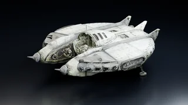 Alien Recon CraftRepaired Zeta scout saucer. Tractor beam, tripod landing legs, nose blaster, one seat. | Air | 134 | 216 | None | Alien camp north of Horowitz: recovery ground southwest of the crew |
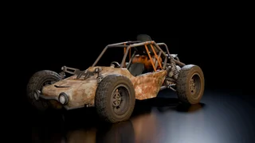 Apocalyptic BuggyOpen-cab dune buggy built from scrap. Long-travel suspension, petrol engine, roll cage, radio fitted. | Cars | 74 | 119 | Jerry Cans | Bonnie Springs: tucked beside the ruined building corner on the north side of the main street, facing east |
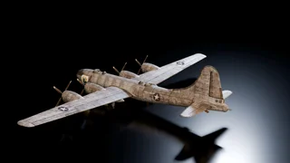 B-29 BomberFour-engine Boomer bomber, restored to fly. Pilot plus two, bomb bay, long take-off run. | Air | 294 | 473 | Jerry Cans | Nellis: southwest threshold of the long runway |
| BicyclePedal bicycle, three-speed hub gear, steel frame. No fuel, no engine, one rider. | Bikes | 22 | 35 | None | Primm: beside the dead courierCamp McCarran: parking barrier near the gate |
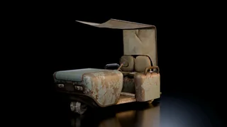 Camp Golf CartFour-wheel course cart in resort livery. Direct drive, bench seat for two, canopy. | Cars | 25 | 40 | Energy Cells / MFCs | Camp Golf: resort forecourt, southeast of the main entrance |
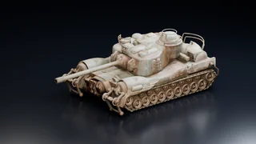 Commonwealth TankCommonwealth single-gun tank. Continuous tracks and a fully traversing cannon. | Armour | 20 | 33 | Jerry Cans | HELIOS One: beside the western approach, under camouflage netting. |
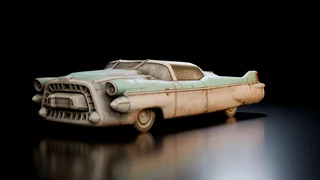 CorvegaChryslus Corvega Atomic V8. Fission-powered, three-speed automatic, seats two, radio. | Cars | 69 | 111 | Reactor Coolant | Southwest of Junction 15 railway station: in front of the Driving Paradise Corvega billboard |
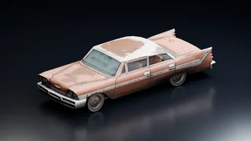 DeSotoLong, rusty DeSoto with a three-speed transmission, bench seats and a rebuilt cabin. Heavy and unhurried. | Cars | 62 | 100 | Jerry Cans | Horowitz farmstead: outdoors along the west side of the occupied barn, facing south |
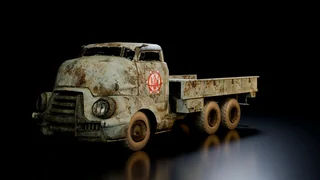 Flatbed TruckHeavy flatbed, six wheels, twin rear axles. Five-speed, fuelled, cab seats four. | Cars | 47 | 76 | Jerry Cans | Junction 15: existing flatbed on the road southwest of the railway stationPowder Ganger Camp West: existing roadside flatbed |
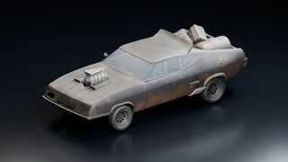 Ford Falcon InterceptorSupercharged V8, rear drive, four gears. Right-hand-drive cabin, side exhausts and twin rear fuel tanks. | Cars | 78 | 126 | Jerry Cans | Gypsum train yard: north wall of quarry office, west of the existing dump truck, facing east |
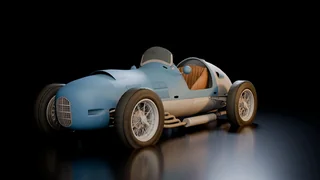 Formula RacerFront-engined single seater. Open cockpit, exposed wheels, four gears, drum brakes. | Cars | 80 | 129 | Jerry Cans | F10 Garage prize claim after first race win |
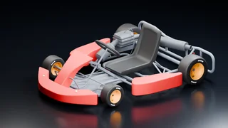 Go-kartSingle-seat racer. Eight plain colours, one fair racing tune. | Oddballs | 56 | 90 | None | F10 → Garage → Oddballs, or lent at The Repconn Arena |
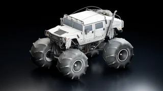 H1 Monster TruckFull-size H1 on two-metre tyres. Huge torque, oversized fuel tank, four seats. Built to drive over cars. | Cars | 89 | 144 | Jerry Cans | Thunderdome only |
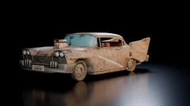 HighwaymanChryslus Highwayman touring sedan. Fuel cell power, four-speed, seats four, radio. | Cars | 71 | 114 | Energy Cells / MFCs | Wrecked Highwayman landmark. Restored car appears on dry ground to the north |
| HopperChild's space hopper, adult sized. Human-powered, single rider, no brakes. | Oddballs | 13 | 22 | None | Outside Vault 21: pavement north of the gift-shop entrance, between the entrance and signNovac: outdoors beside the foot of Dinky’s gift-shop stairs |
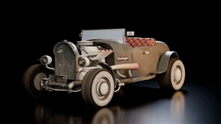 HotrodCustom hot rod on a stock chassis. High-torque V8, petrol, rear drive, open exhaust. | Cars | 73 | 118 | Jerry Cans | Raul’s shack: open ground west of the entrance, facing west |
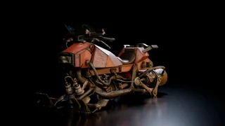 Hover BikePrototype hover bike powered by Energy Cells or Microfusion Cells. Hovers over the ground and can hop or dodge sideways. | Bikes | 54 | 86 | Energy Cells / MFCs | Big MT: forecourt south of the paired Think Tank/Sink entrances |
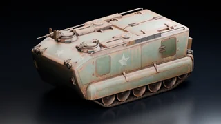 LVTP-8A Marine APCLVTP-8A Marine APC. Enclosed tracked transport with a rear loading ramp. | Armour | 24 | 38 | Jerry Cans | Quarry Junction: tucked away on the western side, under a fitted canvas tarp. |
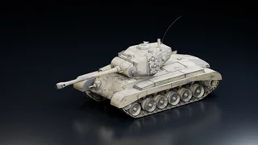 M26 PershingM26 Pershing. Ninety millimetre gun on a full-traverse turret, forty tonnes, petrol V8, tracks either side. | Armour | 24 | 38 | Jerry Cans | Old nuclear test site: tucked alongside the southwest shack wall, inside the fence. Facing northwest toward the yard |
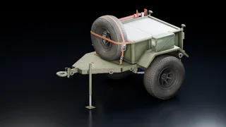 Military TrailerQuarter-ton military cargo trailer on a lunette eye. Reverse a car onto it and it hitches itself. The bed is storage. | Oddballs | 89 | 144 | None | Camp Forlorn Hope: outside the camp near the storage shedCamp Golf: on the car park by the camp sign |
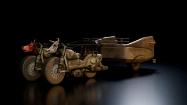 Motor ChariotLegion motor chariot. Twin bikes on a common axle, cart behind, three seats. | Cars | 96 | 154 | Jerry Cans | Cottonwood Cove: outdoors beside the western shack |
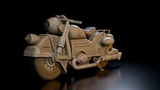 MotorcyclePre-war road motorcycle. Rider plus pillion, six-speed gearbox, petrol, chain drive. | Bikes | 173 | 279 | Jerry Cans | Goodsprings: outside the Prospector Saloon |
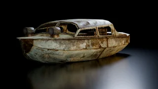 Old Rusty BoatOld fishing boat with an outboard. Direct drive, open deck, four aboard. | Water | 20 | 32 | Jerry Cans | Cottonwood Cove: existing launch |
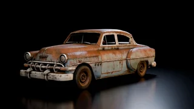 Old Rusty CarFour-door sedan, mostly original. Three gears, bench seats, working radio, heavy corrosion. | Cars | 69 | 111 | Jerry Cans | El Dorado gas & service: forecourt canopy beside the bin |
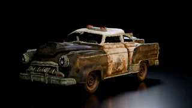 Patrol CarNevada Highway Patrol cruiser. Police V8, three-speed, petrol, seats four, siren and lights. | Cars | 74 | 119 | Jerry Cans | Searchlight: south-side passage beside the police stationNevada Highway Patrol station: outside, between two wrecks |
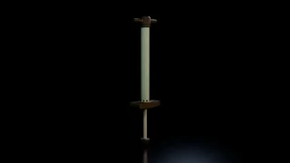 Pogo StickSpring-loaded pogo stick. Steel shaft, two foot pegs, one rider, no brakes. | Oddballs | 10 | 15 | None | Westside: rubbish area near Miguel’s Pawn Shop |
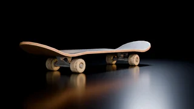 SkateboardStandard pre-war skateboard. Push to move, foot to stop, weight to steer. | Oddballs | 31 | 50 | None | Nellis: beside rubble near the schoolFreeside north gate: behind/right of skipFreeside east gate: skip area |
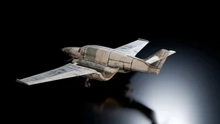 Small Prop PlaneTwin-prop light plane. Pilot plus one, fuel tanks in the wings, short-field take-off. | Air | 179 | 288 | Jerry Cans | Searchlight Airport: replaces one scenery plane |
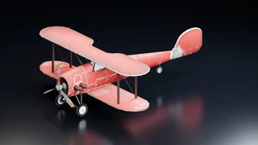 Stunt BiplaneRusty single-seat biplane. Rolls fast, loops tight, lands short. | Air | 128 | 206 | Jerry Cans | Thunderdome. World spawning after visiting once |
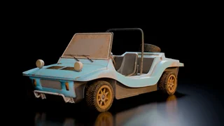 Type 736 BuggyOpen-cab utility. Rear engine, rear drive, petrol, canvas top, minimal bodywork. | Cars | 62 | 100 | Jerry Cans | Brooks Tumbleweed Ranch: inside the curved metal shelter, facing its southern opening. |
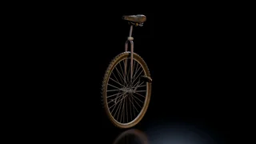 UnicycleSingle-wheel pedal cycle. Fixed drive, no gears, no brakes, one rider. | Oddballs | 17 | 27 | None | Freeside: skip northwest of the Silver Rush |
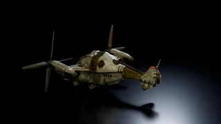 VertibirdEnclave Vertibird. Twin tilt-rotor, two seats, six-stage throttle, fuelled. | Air | 89 | 144 | Jerry Cans | Crashed Vertibird site: replaces the vanilla wreck |
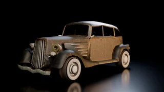 Vikki and Vance Death CarCoachbuilt pre-war tourer. Three gears, rear drive, long wheelbase, radio fitted. | Cars | 63 | 102 | Jerry Cans | Vikki and Vance casino display in Primm. Recovered onto the street outside |
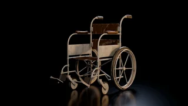 WheelchairManual folding wheelchair. Two large rear wheels, two castors, hand rims. Single occupant. | Oddballs | 14 | 22 | None | New Vegas Medical Clinic: east of the entranceCamp McCarran: medical tent beside the vanilla chair |
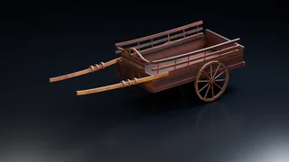 Wooden CartTwo-wheel wooden cart. Back a horse between the shafts and it harnesses itself. The bed is storage. | Oddballs | 89 | 144 | None | 188 Trading Post: on the overpass deck beside the water brahmin, down the slope from the hitching postGrub n' Gulp rest stop: beside the shack |